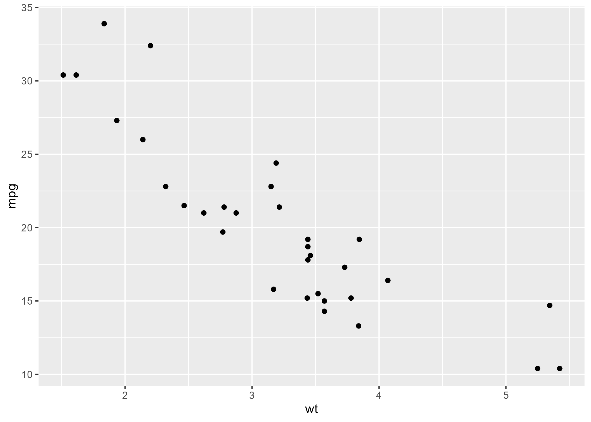
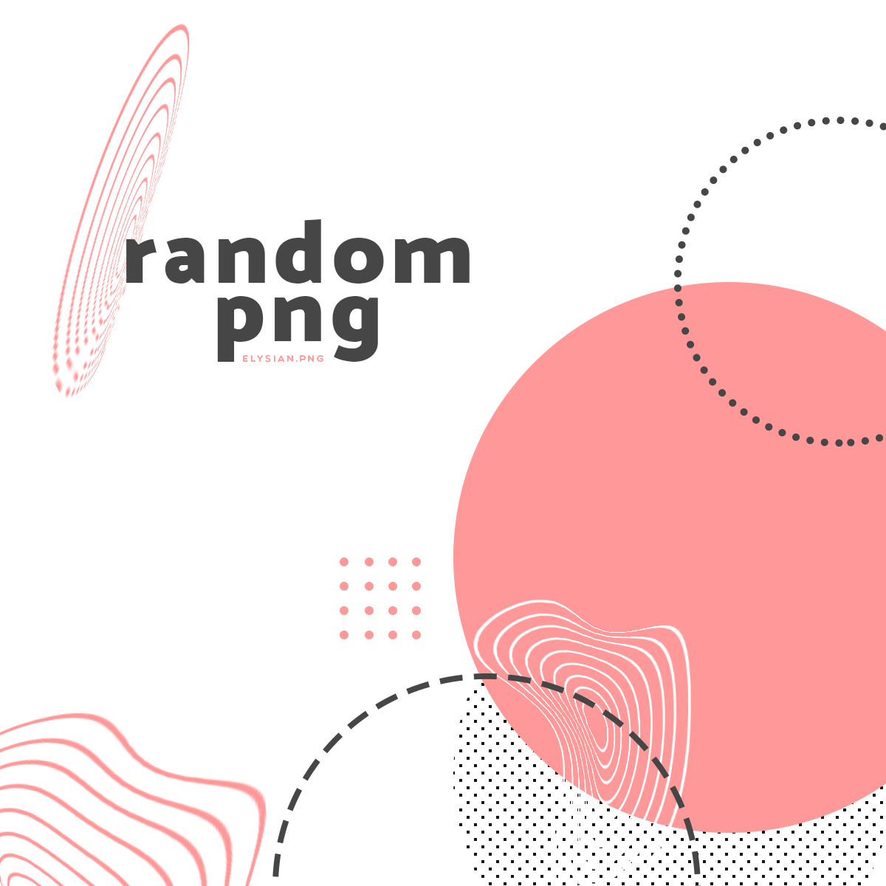

Page example
Overview
Quarto files are structured similar to R Markdown files. You can bold and italicize text, create hyperlinks, and also bullet items among other things. There is a lot you can do with Quarto for building, website.
- Formatting
- Use headers
- Write formatted content
- Displaying plots and images
- Link to other websites
- Link to other pages on this site
Header Level 1 …..
Content if necessary…
Header Level 2: Tips for linking/displaying figures and images.
Header Level 3: Linking to a Plot/Fig
Write you code to create your plot and save it. Save this script in
src/figs. The source code does not need to be on the website.Ensure that your plot is saved to
figs/by referencing the path with {here}.At the top of the
.qmdfile for your page, add a code block thatsource()s the script that will generate the plot you wish displayed on that page.
For example:
source(here::here("figs", "point_mpg_by_wt.R"))`Make sure to edit the code block so that the code runs only (no output).
NOTE: Code blocks that appear in .qmd files will call .R files only. Do NOT embed code blocks in your .qmd file(s) that will process data or create plots directly. Reserve .qmd files for website text, sourcing script files, and calling .png plot files. Developers and engineers compartmentalize project elements and do not combine all content into a single files. Doing so creates many problems not limited to code breaking and code-repair problems, Git merge problems, etc. You will follow a similar practice of breaking the project into pieces, save those files, and push them to the remote repository weekly for your team members.
This code-source()ing step also ensures that plot(s) are (re)created when Quarto rendering the website build files. You certainly want this feature so that new website elements and files are built during the rendering process. A full website re-build, however, is unnecessary when no element of the website changes other than the images and figures embedded within it. As a result, re-builds are not always necessary and will increase update time.
Header Level 2: (Optional) Circumventing a Full Website Build
Sometimes the main structure of your website is untouched but you have new data and you need to run a rebuild of your plots. Although re-rendering is not problematic, it might just take longer than you desire. If you don’t need to render the website and just want to build files, the following is a solution, though requires some extra work.
To avoid a full site rebuild (re-render) when you simply want to create and git push new plots:
- Add your
source()ingcode to a separate file, for example,call_scripts/call_plot_scripts.qmd. - Add a code block to source individual
.Rfiles or all.Rfiles in a directory.
Example:
#| include: false
# source a script file that this page depends on
source(here::here("figs", "point_mpg_by_wt.R"))- This
.qmdfile will render and create the.pngfiles you need in your specified directory but the page will not be linked on your website. Technically, it will be visible athttps://the_url/call_scripts/call_plot_scripts.htmlbut this will be difficult to find. You can always remove the file or directory after rendering the website if you want to remove it completely.
- Link the plot
.pngfile in your.qmdfile.
Once you know the name and location of the file, you can reference it like this, where the .png file is being pulled from figs/:

Linking to Image Example
Similarly, save your image in a folder like images/, and use this format to show it:

Hyperlinks to internal website pages
External Websites
Refer to an outside url:
Internal website Pages
Refer to the rendered HTML files:
Tip: LInk to .html files and not the .qmd file.